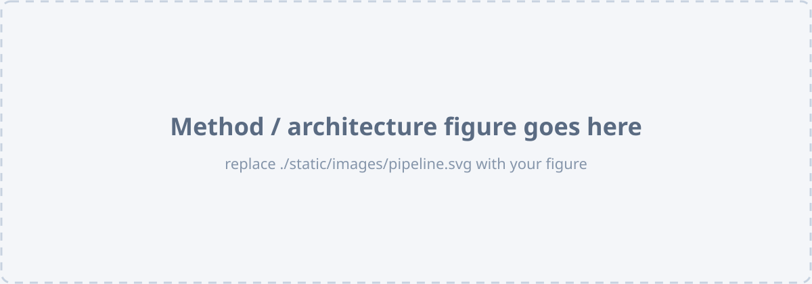

Add your abstract here. Describe the problem (open-vocabulary, part-aware 3D scene graph generation for real-world environments), the key idea of OP3DSG, and the main results.

Add a description of your pipeline / architecture here.
@inproceedings{kim2026op3dsg,
title = {OP3DSG: Open-vocabulary Part-aware 3D Scene Graph
Generation for Real-world Environments},
author = {Kim, Yirum and Kim, Ue-Hwan},
booktitle = {European Conference on Computer Vision (ECCV)},
year = {2026}
}